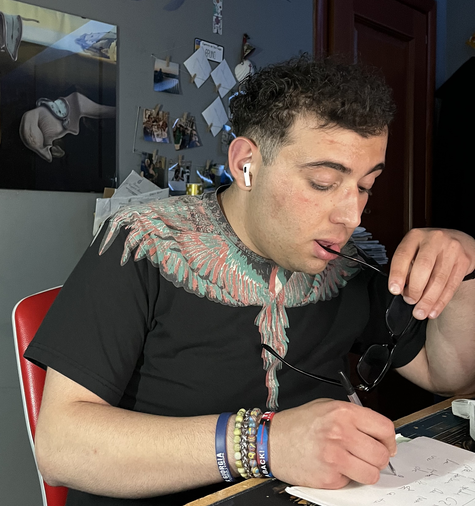
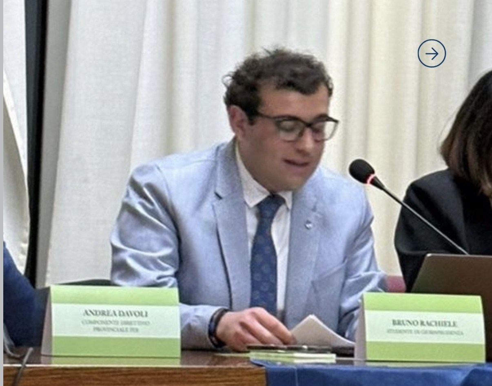
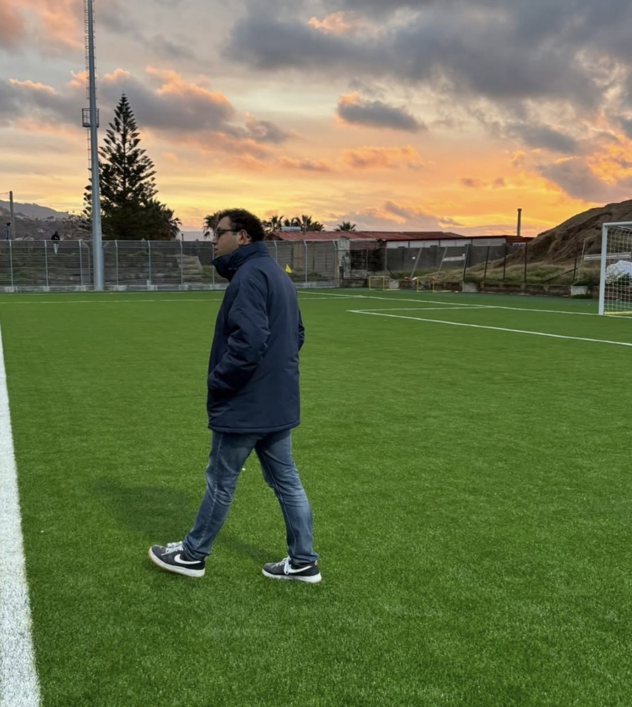
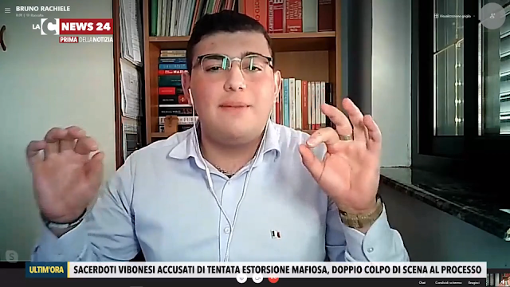
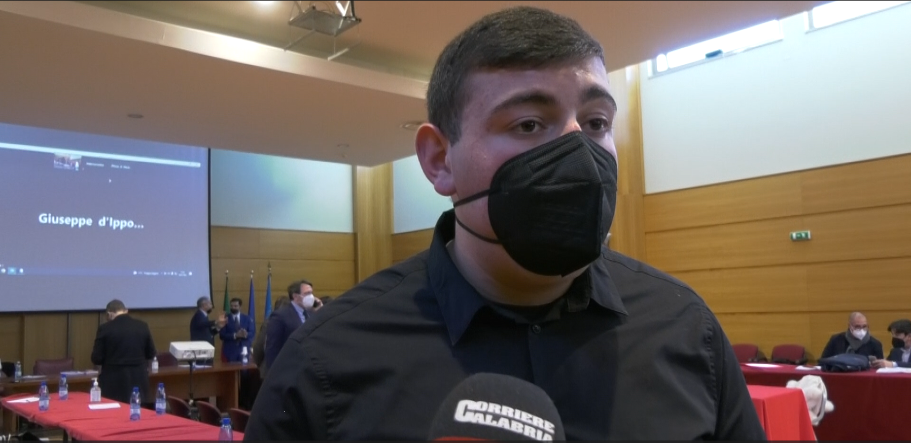
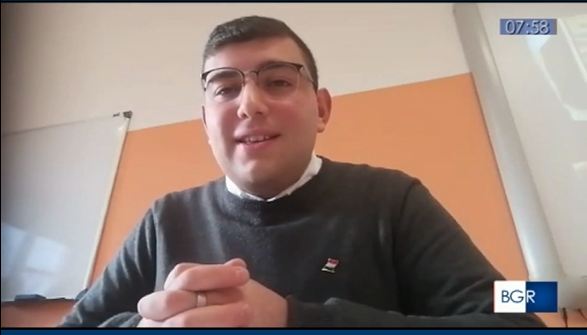

Studente della Facoltà di Giurisprudenza presso l'Università Magna Græcia di Catanzaro ed ex rappresentante degli studenti al Consiglio degli Studenti. Attivo fin da giovanissimo nel panorama sociale, politico, studentesco e dirigenziale sportivo, promuovendo il merito, la trasparenza e lo sviluppo culturale, civile e sportivo del territorio calabrese.




